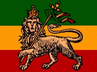
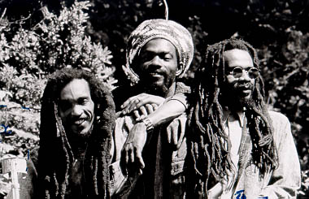
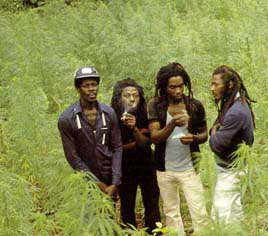
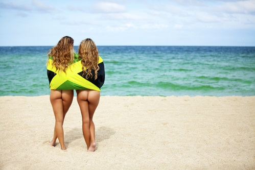

L'Origine du Reggae
C’est de la Jamaïque que le Reggae tient ses racines. Enfant des années 60, il s’inspire à la fois du Jazz, de la Soul, du Blues en plus des musiques caribéennes. Il est à la source d’une culture qui s’est très vite propagé à travers le monde. L’origine du mot Reggae reste un mystère : Ragga Muffin pour « Va-nu-pieds », Regular Guy pour « L’homme de la rue », Ragged pour « Déguenillé »… Les hypothèses sont nombreuses mais le principe reste le même : No prise de tête. Peace man !
Le Reggae est souvent associé au mouvement Rastafari. Véritable mode de vie, influencé par le Shivaïsme et possédant son propre patois, il prône l’unification des peuples. Ce sont des prisonniers de Babylone qui se libèrent de leurs chaînes.
Le Reggae d'aujourd'hui
Ganja et Dreadlocks, c’est la vision que l’on a aujourd’hui de ce style. Pourtant il existe à ce jour de nombreuses variations, de nombreuses cultures qui en sont issues ou du moins qui sont liées au Reggae. Les hippies, les bohèmes, les babas-cool, … que de styles qui gravitent tous autours de la naturalité et la simplicité. Plutot être à l’aise dans un saroual que serré dans un slim.
Mais le style Reggae en soi n'a que très peu changé depuis ses débuts, restant fidèle à lui même. Très attaché à ses origines, on retrouve très souvent les trois couleurs de la Jamaïque à savoir le rouge le jaune et le vert ainsi que le symbole Peace & Love et le motif de la feuille de cannabis. Cette communauté est par ailleurs assez proche du mouvement Punk ainsi que de nombreux autres genres qualifiés d’Underground.
